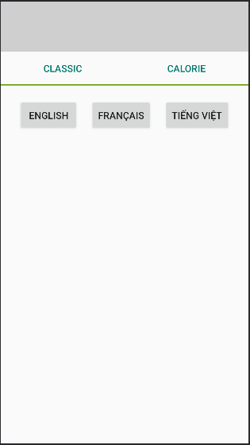
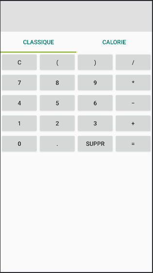
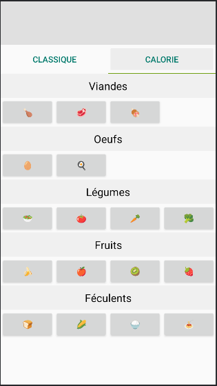

Rapport de Projet
Calculatrice Santé
Antony HUYNH - Date : 09/12/2024
1. Rapport
- Principes UX - Joel Marsh : Comment rendre quelque chose cliquable
- Présentation innovation
- Critique travail
- Rapport GitLab Pages
- Indications de ce qui est fait
Joel Marsh a énoncé deux notions pour rendre un bouton cliquable : la différence et le changement.
Les différents boutons ont leurs particularités : soit la couleur des boutons est différent du fond de l'application, soit la couleur de l'écriture est spéciale qui permet d'inviter l'utilisateur à cliquer dessus.
C'est ce qu'ils les rendent différents de tout ce qu'il y a autour de l'application.
De plus, ces boutons permettent de changer l'application : ils peuvent changer la langue de l'application (Anglais, Français, Vietnamien), ajouter du texte en haut ou donner un résultat ou même animer une barre pour indiquer le mode actuel de la calculatrice (Classique ou Calorie)



Ce projet est une calculatrice qui permet d'avoir les calories de ses repas en rentrant manuellement chaque aliment qui se trouve dans le repas. D'après mes recherches, il n'y a aucune calculatrice qui propose de faire cela avec des boutons qui donne directement le calorie d'un aliment. Il y a des applications d'appareils photo qui capture le repas pour estimer les calories de ce dernier mais cela reste une estimation et non une exactitude d'où mon innovation dans ce projet.
En terme d'organisation, j'ai été assez rigoureux. Avec mon emploi du temps chargé, j'ai dû m'organiser pour passer un certain nombre de temps chaque semaine sur ce projet pour pouvoir avancer. Cependant, je n'ai pas été assez prévoyant pour que mon projet se passe bien de A à Z. Je n'avais pas prévu que mon Gitlab puisse me lâcher pendant mon projet ce qui a retardé légèrement le projet car je n'avais pas de back-up.
Pour la conception de l'application, je suis plutôt fier de mon application. L'appel API marche ainsi les boutons du mode Calorie marchent et retourne le calorie des aliments dans lesquels on a cliqué mais il n'est pas pratique (voir paragraphe 6).
En effet, par manque de temps, je n'ai mis que le strict minimum en terme d'aliment, de plus on est loin de la calculatrice Santé que je parle, on ne peut pas calculer le sucre que contient nos repas, le cholestérol ni même les protéines de chacun de nos aliments etc.
C'est le Rapport GitLab Pages !
Dans le rapport, je détaille chaque point : pourquoi je mérite ce point, comment je me suis pris pour pouvoir le respecter etc.
De plus, tout en haut à gauche de cette page, il y a une grille de notation pour chaque point du barème pour avoir quelque chose de plus visuel sur ce que j'ai fait ou pas.
2. Test Unitaire
- Nommage
- Effort fonctionnel
Le nom des tests est très précis et parle d'elle même. On peut tester les grands nombres, les decimaux et les entiers qui peuvent être sous notation scientifique ou non avec différentes opérations.
Mes tests envisagent plusieurs cas dans lesquels l'utilisateur fera face et des situations très rares que l'utilisateur rencontrera peu de fois.
Dans mon projet, je n'ai seulement testé le ViewModel et le Model et pas l'API donc le package data.
3. Application
- Sauvegarde de contexte / Responsive / Vertical/Horizontal / Ne crash pas / Installation sur téléphone
- Ressources pour constantes (exp4j)
- Service/Thread
Démontré en présentiel.
Mon model est basé sur la bibliothèque exp4j.
Pour faire les différents appels API, j'ai dû utiliser les threads comme dans la classe APICallNutrition.
4. API
- SAX ou DOM / JSON - REST
Les appels de mon API donne un json
Commande exécutée
curl -X GET "https://api.calorieninjas.com/v1/nutrition?query=100g%20chicken" \
-H "X-Api-Key: QoYlEyRbY6UCzCS4CfEv5w==oUL8hVmrolsj87SV"
Résultat de la commande
{
"items": [
{
"name": "chicken",
"calories": 222.6,
"serving_size_g": 100.0,
"fat_total_g": 12.9,
"fat_saturated_g": 3.7,
"protein_g": 23.7,
"sodium_mg": 72,
"potassium_mg": 179,
"cholesterol_mg": 92,
"carbohydrates_total_g": 0.0,
"fiber_g": 0.0,
"sugar_g": 0.0
}
]
}
Son équivalent en Java se trouve dans la classe APICallNutrition.
Pour éviter de devoir appeler à chaque fois l'API pour avoir le calorie du poulet, j'appelle mon API une fois pour qu'il m'envoie un JSON avec toutes les calories des aliments que j'ai dans ma calculatrice et je les stocke dans une base de donnée grâce à la classe calorieDAO et la fonction parseAndSaveCalories de la classe APICallNutrition.
J'ai dû utilisé ROOM dans la classe CalorieDatabase pour simplifier mes tâches avec les requêtes SQL envers la base de donnée locale sinon j'aurais du créer plusieurs fonctions en plus pour simplement appeler les calories d'un seul aliment.
Dans le package data, il y a le fichier config.data.json qui stocke le lien de mon API, la clé de mon API ou token et la demande de mon API (query). De plus, j'ai crée une classe ConfigReader qui aura pour rôle de lire le fichier config.data.json et APICallNutrition servira de cette classe pour faire son appel.
5. Bonifications
- Recherches personnelles : Calculatrice santé et API calorie
- Qualité de rapport (à juger)
- MVVM (à juger)
- Internationalisation : Anglais, Français, Vietnamien
Je fais beaucoup de recherche à ce sujet, je me suis inspiré des applications dans lesquels on prenait simplement une photo de son repas pour avoir une estimation des calories de ce dernier cependant les utilisateurs se plaignent de cette estimation grossière alors j'ai dû trouvé un moyen qui permettrait d'avoir quelque chose d'exact et en approfondissant les recherches, j'ai remarqué qu'il n'y a pas de calculatrice Santé ainsi l'idée de la Calculatrice Santé est venue de cette façon.
L'API que j'ai trouvé a necessité des recherches aussi particulière soit elle.
Je liste tous les points qui sont dans le barème car le barème était la ligne directrice de mon projet.
J'ai bien mis les packages Model (qui a la logique de l'application) avec le package data (qui concerne seulement les appels API et la gestion de la base de donnée locale), la View (qui représente l'interface utilisateur) et le ViewModel (qui sert d'intermédiaire entre le Model et la View).
J'ai crée 3 dossiers (values, values-fr, values-vn) pour avoir les différents mots utilisés dans l'application puis j'utilise la bibliothèque Locale pour mettre la langue de l'application.
De plus, après que la langue soit choisie, les différentes vues se chargent selon la langue choisi puis les Views piochent les mots dans les différents dossiers values (values, values-fr et values-vn) pour afficher leur mot.
6. Autres Points à améliorer dans l'application
- Tests avancées
- Volley / Picasso
- Caffeine / google.common.cache
- Collaboration
- Config CICD (main forcee)
Il n'y a pas de test API seulement des tests pour montrer que les fonctions qui sert pour calculer marche.
J'ai fait des recherches sur ces derniers et je n'ai pas ressenti le besoin de les faire. Je pouvais faire des requêtes réseaux (qui, ici, sont des appels API) sans Volley donc j'ai préféré faire simplement sans cette bibliothèque. Picasso est hors-sujet dans mon cas.
Le fait qu'à chaque lancement de la calculatrice, l'applicaiton doit refaire les appels API pour remplir ma base de donnée et qu'elle doit retenir que la base de donnée locale est déjà rempli sans oublier que mon application doit retenir la langue choisie par l'utilisateur entre chaque lancement de l'applcation me pousse à vouloir implémenter un cache pour retenir tout cela.
Cependant, je n'ai pas eu le temps de m'y intéresser et de l'implémenter correctement.
C'est pour cela que mon application se contente de toujours demande/redemander la langue que l'utilisateur souhaite utiliser et de refaire les appels API pour remplir la base de donnée.
Abdulaziz m'a beaucoup aidé sur les appels API sur le fait qu'il faille utiliser un thread pour cela, sur l'implémentation de ces appels etc.
J'ai fait 80 commits pour cela mais le CI/CD ne veut pas se mettre en place. Dans mon .gitlab-ci.yml, il y avait des commandes à exécuter avant de build le project, de faire les tests etc. Ces commandes étaient destinées à installer le SDK android pour obtenir des outils que j'utilise dans mon application. Donc sans elles, impossible d'avoir le projet. Mais en essayant de les installer, Gradle Build Daemon dispataît sans qu'on s'y attende (ce sont les mots de la console de gitlab).
Je ne sais pas d'où vient le problème et j'aimerais savoir comment le régler mais par manque de temps, j'ai dû abondonner le CI/CD d'un projet Android.